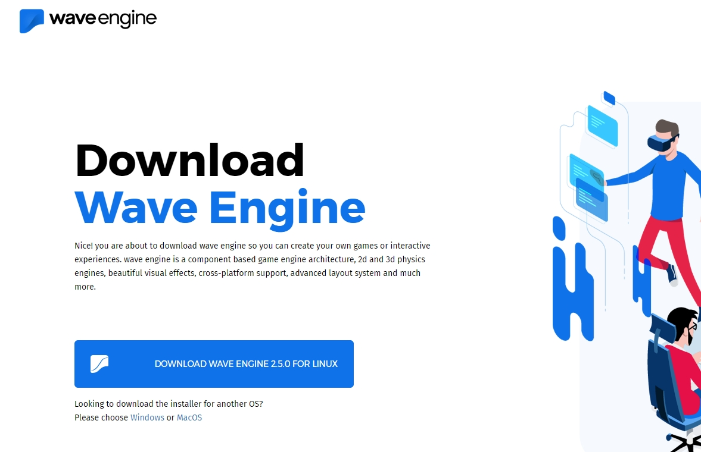

Quick Start Video
Getting Started with Wave Engine on Linux (Ubuntu):

Prerequisites
IDE
You need to install MonoDevelop 7.0 or higher to develop with Wave Engine. Most Linux distributions include an earlier version of MonoDevelop, so you need to install it from the Mono official package repository.
Installing MonoDevelop
Follow the instructions given in the official Mono page: Install Mono Develop on Linux
Launching MonoDevelop
To open MonoDevelop, please execute the following command on a console:
$ monodevelop
It is recommended to create a shotcut anywhere on the desktop to access it more easily. Please refer to your corresponding Window Manager to gather how it is done.
Install Wave Engine
Visit the official Wave Engine web-site, click on Download Wave Engine button (it will redirect to the Download page) and finally Download Installer one. Please assure the platform below is Linux.

Double click on it if you are on Ubuntu, and a friendly setup process will handle the installation. If you are running a different Linux distribution, please refer to the on-line documentation on how to proceed with a .deb file.

Finally, after the installation ends, you will find Wave Editor application right there on the list:

Create a Wave Engine Account
The first time you open Wave Visual Editor you will be asked for an user account.
Your First Application
Please, navigate to My First Application.
FAQ
This section is empty currently. If you find any question which may fit here, please contact us.